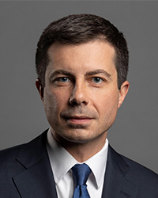
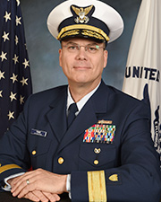
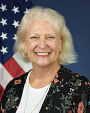

Pete Buttigieg - Secretary of Transportation Chair of the CMTS

Pete Buttigieg currently serves as the 19th Secretary of Transportation, having been sworn in on February 3, 2021.
Prior to joining the Biden-Harris Administration, Secretary Buttigieg served two terms as mayor of his hometown of South Bend, Indiana. A graduate of Harvard University and a Rhodes Scholar at Oxford, Buttigieg served for seven years as an officer in the U.S. Navy Reserve, taking a leave of absence from the mayor’s office for a deployment to Afghanistan in 2014.
He is the son of Joseph Buttigieg, who immigrated to the United States from Malta, and Jennifer Anne Montgomery, a fifth-generation Hoosier.
Growing up in South Bend—which was once home to Studebaker car manufacturing—Pete Buttigieg, like many other Americans in the industrial Midwest, grew up surrounded by empty factories and abandoned houses, sometimes hearing that the only way to a good future was to get out.
He returned to the Midwest after school, worked in the private sector, and was elected Mayor of South Bend in 2011 with a focus on delivering a new future for the city through a fresh approach to politics and bold ideas.
Soon known as “Mayor Pete,” Buttigieg worked across the aisle to transform South Bend’s future and improve people’s everyday lives. Household income grew, poverty fell, and unemployment was cut in half. The city established new resources to extend opportunity and access to technology for all residents, and he launched a “Smart Streets” initiative to improve street design in the downtown and the historically under-resourced West Side. This Complete Streets strategy led to benefits that included small business growth along previously neglected corridors, and hundreds of millions of dollars in new private investment in the once-emptying downtown.
His leadership helped spark citywide job growth and facilitated innovative public-private partnerships like Commuters Trust, a benefits program designed to improve the city’s transportation experience for workers.
At the same time, Mayor Pete worked to build a South Bend community where every resident could feel safe and included. His initiative on municipal identification cards for residents helped to bring undocumented immigrants out of the shadows, while a small business incubator established in a historically Black neighborhood worked to expand opportunity, and a surge of investment went into repairing or removing abandoned houses in lower-income neighborhoods.
In 2019, he launched his historic campaign for president. Throughout 2020, he campaigned for the election of the Biden-Harris ticket and served on the advisory board for the presidential transition. In December, he was nominated by President-elect Biden to be Secretary of Transportation. He was confirmed by the Senate on February 2, 2021, becoming the first openly gay person confirmed to serve in a president’s Cabinet.
Secretary Buttigieg lives with his husband Chasten and their rescue dogs, Buddy and Truman.
Coordinating Board Chair
Richard V. Timme - Rear Admiral for the U. S. Coast Guard,
Assistant Commandant for Prevention Policy (CG-5P) CMTS Coordinating Board Chair

The 15th anniversary of the United States Committee on the Marine Transportation System (CMTS) is a milestone that reflects the interagency cooperation that is its hallmark. We celebrate and embrace that during United States Coast Guard's CMTS Chairmanship in 2020-2021. This year's goal is to Foster a Prosperous and Secure America. The goal aligns with the priorities set by the 2017-2022 CMTS National Strategy "Channeling the Maritime Advantage" while ensuring the development and implementation of national marine transportation system (MTS) policies consistent with national needs.
The CMTS will continue to work together to improve the overall awareness of the maritime domain, be responsible stewards of the marine environment, and promote a strong economy and a high quality of life for all Americans. The CMTS will also continue to support Executive Order 13840, Ocean Policy To Advance the Economic, Security, and Environmental Interests of the United States, to promote "the economic growth of coastal communities and ocean industries, which employ millions of Americans, advance ocean science and technology, feed the American people, transport American goods, expand recreational opportunities, and enhance America's energy security."
There are more demands on the MTS now than during any other time in history. The 2020 COVID-19 pandemic will have lasting economic effects and the MTS is proving more vital than ever to the United States as we work to reinvigorate the economy and emerge as a stronger and more vibrant nation. We will accomplish this together through the following shared priorities.
Each priority and goal aligns with both the National Ocean Policy as well as the approved 2017 CMTS National Strategy:
Leverage Emergent Technology Throughout the MTS
As global economies recover from the effects of the COVID-19 pandemic, the United States MTS will face new challenges, which will require innovative and targeted strategies. This pandemic has forced supply chains to become more agile in adopting and implementing automated and autonomous system technologies. As we look beyond the pandemic, the CMTS will support harnessing of automation and autonomous technologies and will address potential failures to ensure resiliency of the MTS.
Promote Improvements to MTS Infrastructure as a National Priority
The CMTS will expand its goal of facilitating infrastructure investment consistent with national needs. To this end, the CMTS will make participation in NOAA's Decade of the Ocean integral to this year's work plan and ensure a coordinated effort to promote the importance of a safe and secure MTS to the United States.
Support of the Evolving Future of Offshore Industries
Offshore industries require a reliable MTS in order to thrive. This will demand innovative governance to reduce conflicts among users throughout ocean and coastal waters. The CMTS will expand efforts in coordinated interagency communication for emergent port access route studies and modern maritime fairways as these offshore activities continue to grow.
Enhance Unity of Effort in the MTS
The CMTS was created to formalize the partnership of Federal departments and agencies with responsibility for the MTS. We will leverage established relationships with one another to bring a balanced whole-of-government approach to safeguarding America's economic security. We will promote resiliency among all MTS stakeholders' to support and improve MTS efficiency.
These ambitious priorities will Foster a Prosperous and Secure America. The past fifteen years have established the CMTS as a valuable endeavor in Federal collaboration, which is now more important than ever. I anticipate another successful year as we work together to meet these goals.
Executive Director, Executive Secretariat
Helen Brohl - Executive Director U.S. Committee on the Marine Transportation System

Since October 17, 2017, when the CMTS National Strategy for the Marine Transportation System (MTS): Channeling the Maritime Advantage was completed, the CMTS has been leaning forward to implement a "boat load" of initiatives to support the MTS.
Drawing from the National Strategy and the approved work plan under our current Coordinating Board Chair, RDML Richard Timme (USCG), our Future of Navigation Integrated Action Team (IAT) just published the U.S. Navigation Information Strategic Action Plan 2021-2026, an update of the 2012 strategy. The strategy reinforced the need for a fully implemented eNavigation vision as proposed by the International Maritime Organization. The Federal navigation service agencies have taken this vision or idea for eNavigation and have clarified the ways in which they will provide the best, most accurate information to support a safe and secure navigation system. The Maritime Innovative Science and Technology IAT completed its 6th biennial conference with the Transportation Research Board. This year, the very timely subject of automation within the MTS was examined.
The Arctic Maritime Transportation IAT has also been incredibly active. After completing the very comprehensive update on the projection of vessel activity in the U.S. Arctic 2020 to 2030, the team has just reviewed the U.S. Arctic MTS infrastructure assessment table which indicated over 40 changes in the state of infrastructure. As noted by RDML Timme, "The 2021 Arctic MTS infrastructure table serves as a valuable repository of current Arctic marine transportation system infrastructure for federal agencies, Tribal representatives, and stakeholders to use as shipping steadily increases in a strategic region that has never been more relevant."
This past year, the MTS was dramatically impacted with the rest of the nation from the COVID 19 pandemic. In September 2020, the CMTS established a COVID 19 Working Group with over 15 agencies engaged to address those impacts. The Working Group produced a plethora of support documents including a compendium of mental health resources for mariners, held a workshop with CDC about vaccination of MTS workers, and is supporting a mariner survey to assess mental health. All of these resources are available on the CMTS Topics page. This work was a catalyst to also establish a MTS Supply Chain Working Group to address impacts from COVID 19 and other marketplace drivers.
The CMTS is an extraordinary Federal interagency partnership of over 25 active members, including White House offices, and as the organization grows in membership, so does its value. We remain indebted to the many agency members who provide expertise and resources to the Executive Secretariat and CMTS activities.